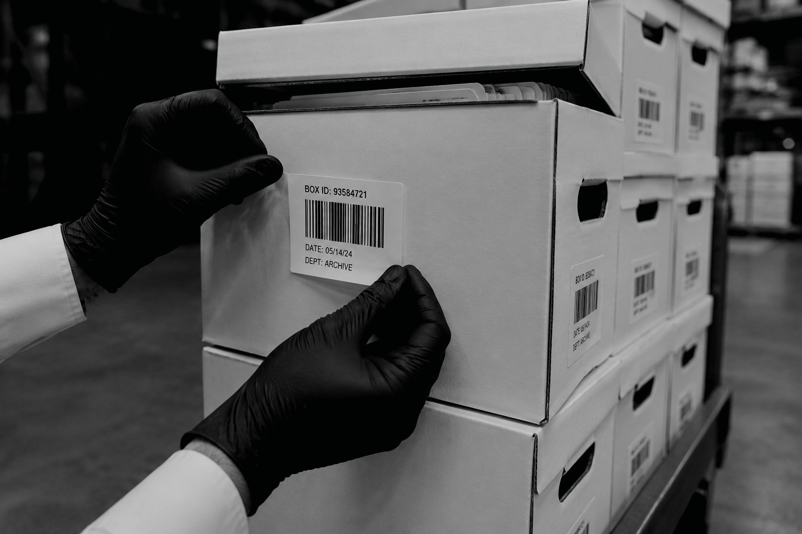
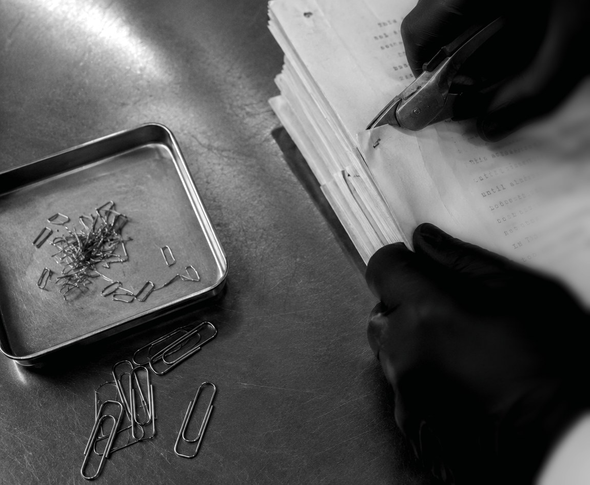
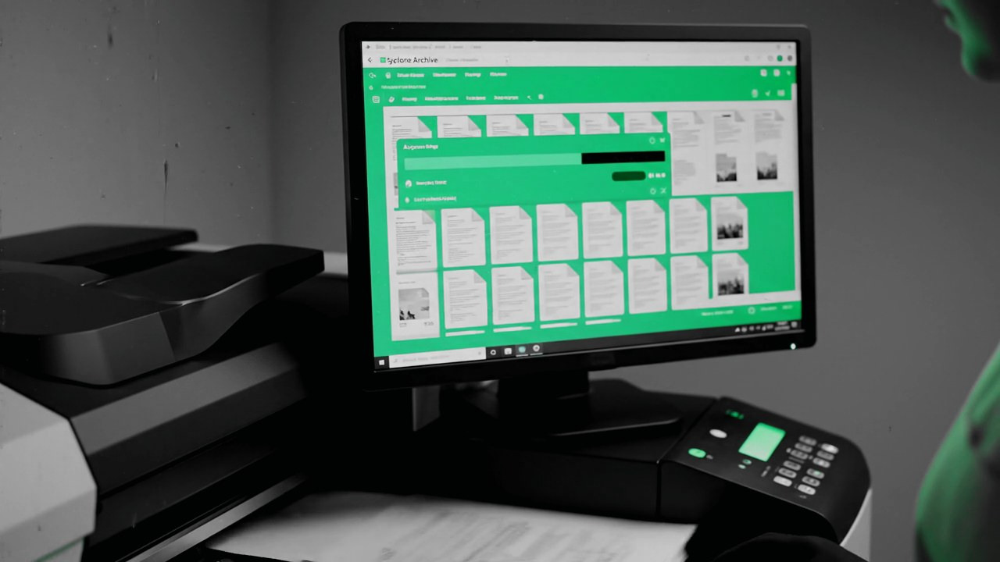

Back to you
Returned in the same boxes, next working day on orders received before 12 noon. Same-day rush service in Dublin.
Document scanning · Dublin · Over 30 years
Records you are obliged to hold but have no room for. We scan them, store them under 24/7 monitoring at our purpose-built facility, send a file back when you ask, and shred them with a certificate when the retention period ends.
What we do
Paper arrives, gets digitised, sits somewhere secure while you still need it, comes back when you ask, and is destroyed when it is finally spent. We handle all four, so nothing changes hands between suppliers.
Collected, prepped, scanned A3 to A6 and indexed. Back to you as searchable files.
How it works → 02Our own purpose-built facility. Barcoded to shelf position and monitored around the clock.
What that means → 03A single file back out of storage without unpacking anything else.
Turnaround → 04Shredded on our premises by Cyclone Shredding Ltd, with a certificate issued.
The process →01 · Scan
Fill a box and leave it exactly as it is — staples, paperclips, folders and all. Once it leaves your desk, every remaining step is ours.
01
Use your own boxes or ours — flat-packed with lids, €39.50 + VAT per pack of ten, delivered anywhere in Ireland. Every box is barcoded at your premises, so it is tracked from the moment it leaves your hands.

02
All documents are prepped on site by Cyclone before scanning. No need to remove any staples. We supply a guide and template for recording the file descriptions used for indexing.

03
Any document from A3 to A6. One box or a forty-year backfile — no order is too big or too small. Every file is indexed to the template you filled in, so it lands searchable rather than as a pile of images.
04
Images are returned in the digital format that suits you — PDF/A, searchable PDF, TIFF or JPEG — through a secure file transfer portal.

05
Nothing is stored or destroyed without your authorisation.
Returned in the same boxes, next working day on orders received before 12 noon. Same-day rush service in Dublin.
Our own purpose-built facility. Barcoded to shelf position and monitored around the clock.
Storage →Destroyed on our premises by Cyclone Shredding Ltd, with a certificate of destruction issued.
Destruction →02 · Store
Records you are obliged to keep but do not need to hand. Held at our purpose-built facility and barcoded to a shelf position, for as long as you need them — and not a day longer than you authorise.
03 · Retrieve
Because every box and every file inside it is barcoded to a shelf position, a specific document can be located and sent out without anyone walking the aisles looking for it.
Out to you the next working day on requests received before 12 noon.
Same-day service across the Dublin postal districts when you need it that afternoon.
Every retrieval is recorded against the box, so the audit trail stays unbroken.
04 · Destroy
When a retention period runs out the paper is shredded at our purpose-built facility by Cyclone Shredding Ltd — not handed to a third party and not moved off site first.
Why scan
Searchable PDF means full-text search across everything. No walking to a cabinet, no missing folders, no “who had it last?”
Cabinets and storerooms are expensive square metres. Digitise, then store or destroy the originals off site.
Scanning and filing is hours a week of skilled staff time. Ongoing runs — daily to quarterly — take it off their desk for good.
Paper exists in one copy, in one building. Digital files can be backed up, and access to them logged and controlled.
Ongoing scanning
Rather than one big project, we can arrange to bulk scan daily, weekly, monthly, or even quarterly. Your team stops scanning entirely and the backlog never comes back.
Quick guide
We can scan any type of documents from size A3–A6.
Yes, no order is too big or too small. If you are paying staff to scan, we can also arrange to bulk scan daily, weekly, monthly, or even quarterly.
All documents are prepped on site by Cyclone before scanning, so there is no need to remove staples. We supply a guide and template for recording the file descriptions used for indexing.
Three options: returned to you, stored at our purpose-built facility until you are happy they are no longer required, or securely shredded at our premises by Cyclone Shredding Limited.
As long as you need. Boxes are held until you confirm they are no longer required, and nothing is destroyed without your authorisation.
Yes. Every box and the files inside it are barcoded to a shelf position, so a specific document can be pulled without disturbing anything around it — next working day on requests received before 12 noon, or same day across Dublin.
Yes. Shredding is carried out on our premises by Cyclone Shredding Limited and a certificate of destruction is issued.
Documents are managed by our barcode-based tracking system, which provides a comprehensive audit trail for every box and file movement, and stored at our purpose-built facility, protected by intruder alarms, smoke detectors and CCTV.
Tell us which service you need and roughly how much paper is involved. Fill in your details and we will call you back.